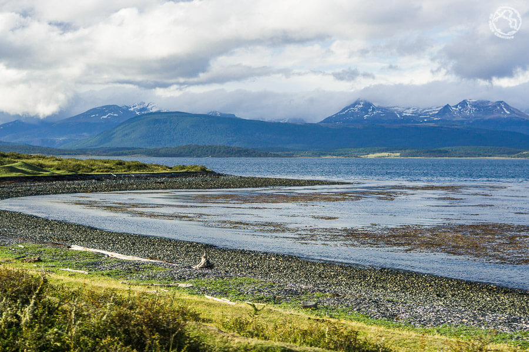

Es un territorio insular en la Tierra del Fuego que forma parte de la Reserva de la Biosfera Cabo de Hornos, el área con esta denominación más austral del planeta.
Es accidentada y montañosa y en su paisaje se distinguen los Dientes de Navarino, pináculos dentados entre bosques y lagos en los que se encuentra uno de los circuitos de senderismo más al sur y apasionantes del mundo.
Otras atracciones turísticas de Isla Navarino son los restos arqueológicos de la cultura yámana, las rutas de las misiones inglesas y la observación de la flora, fauna y de la geología isleñas.
El Parque Etnobotánico Omora, en el norte de la isla, en el margen sur del Canal del Beagle, alberga una colección de la flora regional que incluye plantas in situ.
Si te asomas a la barandilla del muelle del puerto de Ushuaia la puedes ver, allí enfrente, a apenas 7 kilómetros de distancia. La isla Navarino está separada de la Isla Grande de Tierra del Fuego por un canal marítimo que los nativos llamaban (y llaman) Onashaga y que pasó a llamarse canal de Beagle en honor al barco comandado por Fitz Roy y que transportó a Charles Darwin durante el viaje que le permitió alumbrar su teoría sobre la evolución.
La isla Navarino es un pedazo de tierra montañoso exactamente igual al territorio donde se asienta Ushuaia. La única diferencia entre ambas orillas la marca una línea imaginaria dibujada en mitad del canal de Beagle que delimita la presencia de dos estados: Argentina y Chile.
Chilenos y argentinos viven en una disputa constante por cuestiones territoriales, entre ellas, la de ver quién posee el pedazo de tierra habitado más al sur. En esta disputa, unos dicen que Ushuaia, la ciudad más al sur del planeta, otros que Puerto Toro, una pequeña aldea situada al este de Navarino. Saltando de continente, la disputa se traslada a la Antártida, donde ambos países tienen bases con población civil, familiares de científicos o militares residentes en Villa de las Estrellas (Chile) o Base Esperanza (Argentina).
En lo que respecta a Ushuaia y Puerto Toro, ambos tienen razón: Ushuaia es una ciudad, Puerto Toro, una aldea. Ambos son los «algo» más al sur. En cualquier caso, esta disputa y, sobre todo, la presencia de una frontera, ha provocado que la isla de Navarino tenga muchísima menos notoriedad (y visitas) que su vecina Ushuaia. Todos los viajeros que van a Tierra del Fuego llegan a Ushuaia, solo unos pocos cruzan a Navarino, a la Patagonia chilena.
Aunque se vea a simple vista. Aunque está a 7 míseros kilómetros. Y aunque tenga lugares e historias que merezca la pena conocer.
Mira en el video de abajo lo hermoso que es la Isla Navarino: